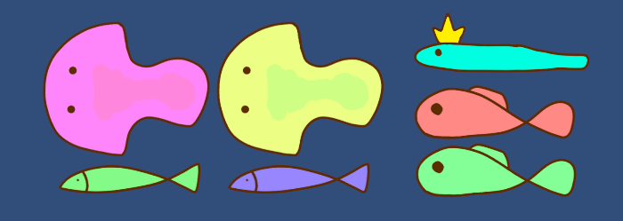
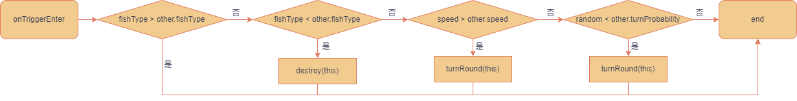
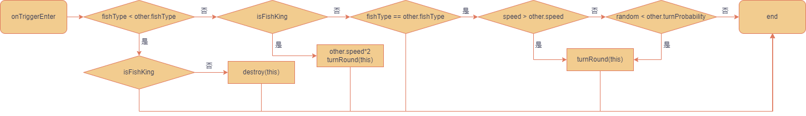
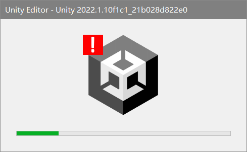

开发日志1
前天开始决定偷跑一下钓鱼游戏
躺床上花了点时间起草了一份设计书
一觉起来 太棒了
修修补补 => 2022年7月31日 11:43:44 新建Bullet_Fishing文件夹
把设计书.md放入其中
又是修修补补
然后顺便画了张布局图
想了下还是用 unity + mysql 来实现吧
更新了个 unity => 2022年7月31日 22:09:59 新建Bullet_Fishing\bullet-fishing的 unity 工程文件夹
当 vscode 遇到 unity
- 在 unity 中，配置 Edit>Preferences>External Tools>External Script Editor 选择 Visual Studio Code
- 在 vscode 中安装 C# 以及 unity 相关插件
然后就
但核心插件 C# 在启动时会报错：
1 | The .NET Core SDK cannot be located. .NET Core debugging will not be enabled. Make sure the .NET Core SDK is installed and is on the path. |
解决方法：
- 下载 .Net SDK 并安装 注意环境变量是否配置（如果报错可能需要重启）
- 根据
Assembly-CSharp.csproj文件中的TargetFrameworkVersion下载对应版本 (v4.7.1) .NET Framework - 重启 vscode
unity 项目框架
工欲善其事必先利其器
自己以前弄的找不到了
框架 这次就用这个修修补补
以后考虑使用整合框架，如 TEngine
然后就是数据库的设计
本来想玩一玩关系图然后去下了个一款简单好用的数据库建模平台 Pdmaner
感觉也没有多好用.jpg
接着滚回去用我的 navi猫
简简单单写了16个表后我也不想画关系图了
和设计书一样其中 50+% 的内容是不会在 v0.1 中出现的
开摆！
日 我设计了个锤子的表
有张表叫 player_item
是用来记录玩家获得物品的表
有 num 、 created_time 和 obtain_method 三个字段
为了偷懒每个人的每件物品只会有一条数据
UNIQUE INDEX `idx_uid_item_id`(`uid`, `item_id`) USING BTREE
然后每次使用或者获得进行更新
那问题来了：
那这后面 created_time 和 obtain_method两个字段还有个锤子用
总不能每次增加/减少记录一条并且 count 允许负数、 obtain_method 增加使用属性吧
然后每次查询语句长的一批
Mysql.Data.dll 版本问题
一般unity项目中的 Scripting Runtime Version 设置的是3.5
所以 mysql.data.dll 要选择 .net3.5 版本的
4.0版本的会报错
在这里
我宣布
最强插件
Github Copilot
反射 SetValue 碰到 DBNull 时无法转换成 String
1 | System.ArgumentException : Object of type 'System.DBNull' cannot be converted to type 'System.String'. |
解决方法：
1 | // propertyInfo.SetValue(t, row[columnName], null); |
C# 中的三目运算符
理想中的使用方法：
1 | occurTime > fish.DisappearTime ? Destroy(gameObject) : SetInitInfo(); |
这在 C / C++ 中显然能运行的语句在 C# 中
Error: 只有 assignment、call、increment、decrement 和 new 对象表达式可用作语句
简而言之就是必须返回点什么东西…
要在三目运算符中调用 void 方法可以使用委托
1 | (condtion ? (System.Action)A : B)(); |
这还不算完，如果调用的函数带有参数，那又得更麻烦，可以使用 Lambda 表达式：
1 | (occurTime > fish.DisappearTime ? new System.Action(() => Destroy(gameObject)) : () => SetInitInfo())(); |
不知不觉已经 8 月 6 号了，git push 完来随便写一点
弄了个测试池子，画了点测试用鱼，写了点逻辑
先来个鱼的全家福
为了方便鱼的运动方向是平行于 x 轴的
选择一条鱼 -> 生成一条鱼 -> 让鱼游起来 -> 设定初始点 -> 让鱼会转向 -> 生成一池鱼 -> 避免鱼重叠
如何避免重叠 => 使用碰撞盒来检测是否相遇
像 OnTriggerEnter 这一类在碰撞的时候是会同时发送给两方
所以每条鱼只要处理自己的逻辑即可
然后加上鱼王的话，为了提现鱼王的地位，最后弄成了这个逻辑
简单来说就是 大鱼吃小鱼，鱼王最威武
有了鱼碰撞盒那我又为了偷懒给池子搞了个大的碰撞盒
当鱼离开池子的 box 触发 OnTriggerExit 的时候调用 SetInitInfo 重新随机鱼的位置
偶然间发现 SetInitInfo 会有额外的触发
也就是说
如果对象在处于有触发碰撞的情况下被 Destroy，会触发 OnTriggerExit
虽然修了这个问题但写到这里还是觉得身上有七七四十九只蚂蚁在爬
尤其是还弄了个 onDestroy 的变量
重构代码去了…
15 minutes later...
改完舒服了，顺便还重构了点别的，看上去没什么问题
说到随机初始位置这儿那有小故事讲了
小心使用 While (true)
想法是这样的，如果随机的新位置和现有的鱼会重叠，那么重新随机，直至找到一个新的可以放下的位置
怎么想都很简单
第一版
1 | Vector3 initPosition = new Vector3(); |
结果：Unity Editor 未响应
死因：fishList 里有当前的鱼，自己盒子碰自己不是必定 overlap 然后死循环？
第二版
1 | // if (boxCollider.IsTouching(fishInstance.boxCollider)) |
结果：Unity Editor 未响应
死因：终于发现随机出来的新位置根本没有用上，还是在用原来的碰撞盒进行检测
举个例子
在池子外左侧的小鱼 A 向右运动，碰到了在向左运动的小鱼 B
小鱼 A 的速度比小鱼 B 快，所以小鱼 A 转头调用函数 TurnAround
在 TurnAround 最后会检测如果在池子外且远离池子那么就重新随机初始位置
所以小鱼 A 就需要重新随机初始位置，此时小鱼 A 和 小鱼 B 的碰撞盒是 Touching 的
寄
第三版
1 | ... |
结果：Unity Editor 未响应
死因：自己把自己卡死了…
因为测试时候大鱼的尺寸相对于池子来说还是挺大的，大鱼在靠近池子中间的位置离开然后触发重新随机位置
由于在第一版中将 faceTo 的随机扔在了 while 外面，所以如果运气不好随机到了和当前位置同一边
那无论在哪个高度放置都会和先前的位置发生碰撞
但这个时候我还没有意识到 faceTo 的问题
第四版
1 | // if (newBounds.Intersects(fishInstance.boxCollider.bounds)) |
结果：Unity Editor 未响应
死因：被别的大鱼卡死了
最终版
1 | while (true) { |
结果：Unity Editor 存活
真要说如果两边各一条大鱼当道，还是能卡死你
但是
这种情况并不会发生！答案在下面
所以说小心使用 While (true) 以及软件测试员真的很重要
然后说说 Unity 未响应这件事
图文没有关系
图文没有关系
图文没有关系
重要的事情说三遍！
接着说鱼的事
现在要在每条鱼上方绑一个可以实时更新的信息牌
信息牌是需要挂在 UI 的 canvas 层下的
位置需要从世界坐标系中转换到屏幕坐标系中
好久没用 Unity 发现以前的 Text 组件已经被放到 Legacy 类下了
取而代之的是 TMP，还没怎么仔细看
UI 的获取和更新在 BasePanel 基类的帮助下还是挺简单的
但一想到后面要给 UI 加动画就脑壳疼
盯着池子观察了会儿发现一个问题
基于上面的 大鱼吃小鱼 的碰撞处理逻辑
若干时间后池子里会变成大鱼的天堂
弱肉强食，适者生存
要解决也很简单，限制池子里的大鱼最多只有一条
至于鱼王部分
这是今天昨天最后写的一块内容
放到下一个开发日志中讲吧
东西应该还挺多的
然后讲讲池子
最重要的就是刷新机制，总不可能一直在一个地方钓鱼
这里的鱼现在警惕性很高 看来还是换个地点比较好
为了防止随机到当前池子
1 | int offset = Random.Range(1, pools.Count); |
那为什么我每次随到同一个池子？
有了池子的随机切换，那就需要一个面板来进行提示
在初步的 Layout 中池子的信息在右上角
除了会显示当前池子、下一个池子、切换倒计时之外
还会显示鱼王的相关信息以及玩家钓鱼的信息
现在大概弄了一小半吧
现在是北京时间 2022年8月7日 00:22:15